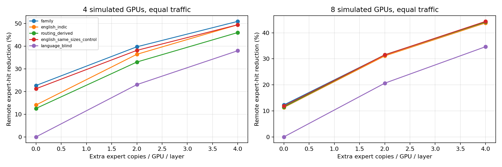
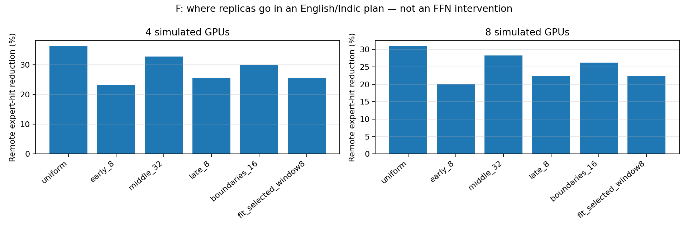

Local CPU simulations · 9 November 2026
Executed: linguistic-family grouping, English/Indic pooling and replica layer-location tests.
Not executed: inserting/training a shared FFN. No latency or network bytes measured.
Full findings and caveats · Separate Raj A–D results · New experiment bundle
| Plan | 4GPU remote-hit reduction | 4GPU mean imbalance | 8GPU reduction | 8GPU imbalance |
|---|---|---|---|---|
| family | 39.78% | 2.539 | 31.49% | 3.345 |
| english indic | 36.46% | 1.643 | 31.11% | 3.311 |
| routing derived | 33.05% | 1.987 | 31.55% | 3.147 |
| english same sizes control | 38.19% | 2.621 | 31.50% | 3.325 |
| language blind | 23.07% | 1.246 | 20.63% | 1.519 |
Higher remote-hit reduction is better; lower imbalance is better. Family membership gives a modest descriptive routing association, but does not establish a robust placement advantage over controls.

Every variant spends the same total replica memory. Uniform allocation beats middle-only in this test. This is not an experiment on an inserted neural layer.

The supplied counts cannot predict an altered model. The architecture experiment is specified separately and unrun.
Family table · Shuffled controls · Layer-location table · Validation